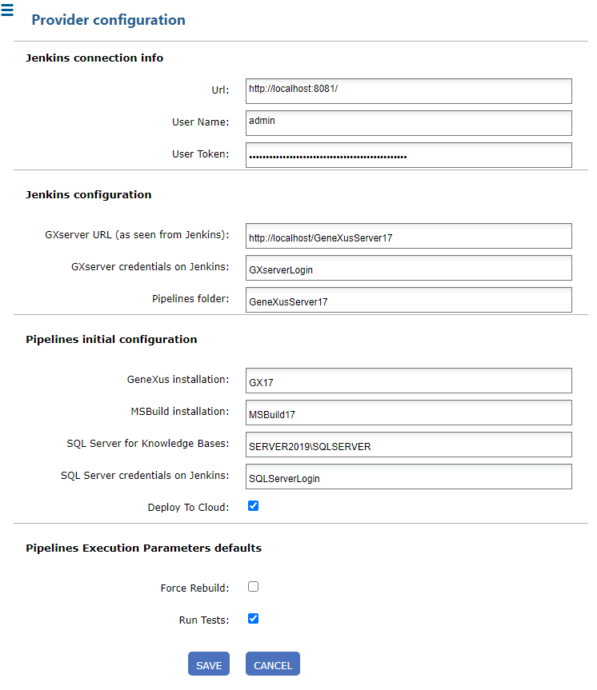

These are the necessary software requirements to be able to work with continuous integration pipelines from GeneXus and GeneXus Server:
The machines where GeneXus Server and Jenkins are located must have HTTP and HTTPS connectivity between them. It is highly recommended that they be separate machines.
It is necessary install and configure Jenkins to work with CI pipelines and catalog credentials in Jenkins to integrate to GeneXus Server. Follow these instructions if you are interested in installing a Jenkins server.
If you want to perform these steps manually please refer the following documents:
Finally, the integration with Jenkins must be configured in GeneXus Server. To do this, in the GeneXus Server Console, click on the “Continuous Integration” option that appears in the menu on the left. When you do this, two tabs will appear on the right: “Pipelines” and “Providers.” Click on "Providers," and complete the following:
- URL: Jenkins URL (must be accessible from the GXserver installation)
- User Name: Jenkins username with which the token was created in the previous step (e.g. admin)
- User Token: Token generated in Jenkins for that user (ex: 11d8ba61ed02b39605355dcaeb2bbe77ea). See How to configure credentials to work with CI pipelines "Obtain token for GeneXus Server" section for more information
- GXserver URL (as seen from Jenkins): URL of this GeneXus Server, which is accessible from the Jenkins machine.
- GXserver Credentials: Aliases of the credentials that Jenkins will use when communicating with GXserver (a valid GXserver user). See "Catalog access credentials to GeneXus Server" of How to configure credentials to work with CI pipelines if you followed the manual installation.
- Pipelines folder: Name with which this GXserver will be identified (among others that could also communicate with Jenkins itself). A folder will be created in Jenkins with this identifier, to create the KBs within it.
- GeneXus installation: Name given to a GeneXus installation as it was cataloged in Jenkins. See Step 6 of How to install and configure Jenkins to work with CI pipelines if you followed the manual installation.
- MSBuild installation: Name given to an MSBuild installation as cataloged in Jenkins. See Step 6 of How to install and configure Jenkins to work with CI pipelines if you followed the manual installation.
- SQL Server for Knowledge Bases: Instance of SQL Server used on the machine where Jenkins is located for GeneXus KBs.
- SQL Server credentials on Jenkins: Aliases of the credentials that Jenkins will use when communicating with SQL Server (if SQL Server Authentication method is used). Refer to SAC# 49217 for more information.
- Deploy To Cloud: Default value for the Deploy To Cloud option of the pipeline executions that will be created.
- Force Rebuild: Default value for the Force Rebuild option of the pipeline executions that will be created.
- Run Tests: Default value for the Run Tests option of the pipeline executions that will be created.

Done!
Now you can create and monitor continuous integration pipelines from GeneXus and GeneXus Server.
The GXserver Credentials must be configured in the jenkins.config file located in <GXserver installation directory>\VDir\BinGenexus\Packages\ContinuousIntegration as shown in the example code (credentials parameter).
<jenkinsdefaultselements>
<jenkinsdefaults url="http://localhost:8081/" serverurl="http://localhost/GeneXusServer17/"
folder="GeneXusServer17" credentials="GXserverLogin" genexus="GX17" forcerebuild="false"
msbuild="MSBuild17" sqlserver="SCRATCHSRV2019\SQLEXPRESS"
runtests="true" deploytocloud="true" />
</jenkinsdefaultselements>
Fixed in GXserver V17U1, refer to SAC# 48314 for more information.